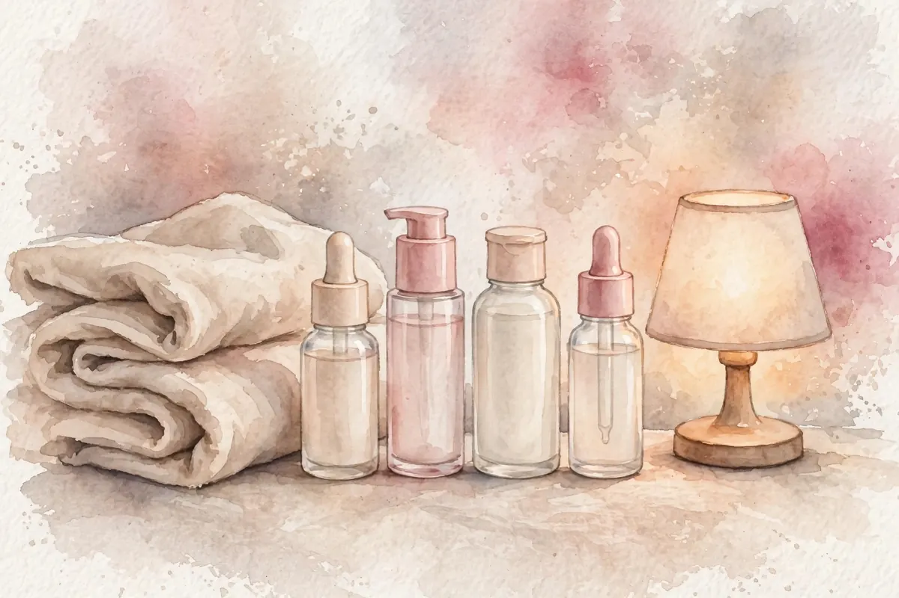

トップ ＞ スキンケア ＞ 夜のスキンケアにかける時間の組み立て方
夜のスキンケアにかける時間の組み立て方

夜のスキンケアは、1日の終わりの一番疲れている時間にやる作業です。手順が多くても、時間が読めなければ続きません。施術の仕事をしていると、時間配分の大切さを毎日感じます。この記事では、夜のケアを「何分で、どの順番で」組み立てるかという、段取りの考え方を整理します。
まず「合計時間」を決めてしまう
おすすめは、先に合計の目安を決めることです。たとえば平日は10分、休日は20分、といった具合に、自分の生活に合う枠を決めてしまいます。枠が決まれば、その中に入る手順の数も自然に決まります。あれもこれもと増やす前に、枠を決める。これが、夜のケアを続けるための土台です。
時間を測ったことがない方は、一度だけ、普段のケアを時計を見ながらやってみてください。思ったより短いことも、長いこともあります。実感としての時間と、実際の時間のずれを知ることが、組み立ての第一歩です。
帰宅直後と就寝前に分ける方法
帰宅したらまず落とすケアだけ済ませて、残りは入浴後や就寝前に回す、という2回分けの方法もあります。帰宅直後にクレンジングまで済ませておくと、その後の食事や休息の時間を、顔に何も付いていない状態で過ごせます。就寝前は、化粧水から仕上げまでの「付けるケア」に集中できます。
分ける場合の注意は、落としたあとに長時間そのままにしないことです。入浴がすぐなら問題ありませんが、間が空く日は、軽く化粧水だけ付けておくなど、つなぎの手順を決めておくと安心です。自分の夜の流れに合わせて、分け方を調整してください。
疲れた日の「最小ライン」を先に決める
どうしても疲れた日は、手順を減らす判断も必要です。そのときに慌てないよう、「最小ライン」を先に決めておくのがおすすめです。たとえば「落とす、化粧水、仕上げのクリーム」の3つ、というように、削る順番ではなく残すものを決めておきます。
最小ラインの日があっても、翌日に取り返そうとして手順を倍にする必要はありません。いつもの枠に戻すだけで十分です。夜のケアは、完璧な日を増やすことより、ゼロの日を作らないことのほうが、長い目で見て大切だと感じています。
入浴とケアの「つなぎ」を決めておく
夜のケアは、入浴との位置関係でも組み立てが変わります。入浴前に落とすケアまで済ませる流れと、入浴中にすべて済ませる流れでは、浴室に置くアイテムが変わります。自分の家の動線に合わせて、洗面所と浴室のどちらに何を置くかまで決めておくと、夜の動きに迷いがなくなります。
入浴後は、体の熱で水分が飛びやすい時間です。浴室を出てからケアを始めるまでの間を短くすることも、時間の組み立ての一部です。タオルの置き場所、着替えの順番といった小さな段取りが、ケアの開始時刻を左右します。夜の設計は、洗面所の外側まで含めて考えるものです。
家族と洗面所を共有する場合は、使う時間帯の譲り合いも組み立ての一部です。帰宅時間や入浴の順番が決まっている家庭では、自分のケアの枠もその流れの中に置く必要があります。順番待ちの時間を、落とすケアの時間に充てるなど、待ち時間を組み込む発想も有効です。
夜の組み立ては、一度決めたら終わりではありません。仕事の忙しさや季節で、夜の流れは変わります。季節の変わり目に、枠と手順を見直す日を作っておくと、無理のない形に更新し続けられます。続く設計とは、更新できる設計のことです。
夜の時間の組み立てには、「やらないことを決める」視点も含まれます。手順を増やすことばかりが充実ではありません。今の手順の中で、自分の生活に合っていないものがあれば、外す判断も組み立て直しの一部です。足し算の前に、引き算の確認をしてください。
組み立てを見直すタイミングは、生活の変化のときです。仕事の時間帯が変わった、家族の生活リズムが変わった。そうした節目に、夜の枠を作り直すと、無理のない形に更新できます。
夜のケアは、1日の最後の自分の時間でもあります。段取りが整っていると、その時間を落ち着いて使えます。効率のためだけでなく、気持ちよく1日を終えるための設計だと思っています。
セラフィナ「夜のケアは、時計と相談して決めるんだね。最小ラインがあると安心だよ」

セラフィナ｜美容の道具箱の案内役
「量と表示が分かれば、美容は失敗しない。」——セラフィナと白猫のモコが、買う前のチェックポイントを案内します。綺麗になりたい気持ちに正直に、でも表示は冷静に読むのが、このサイトの約束です。